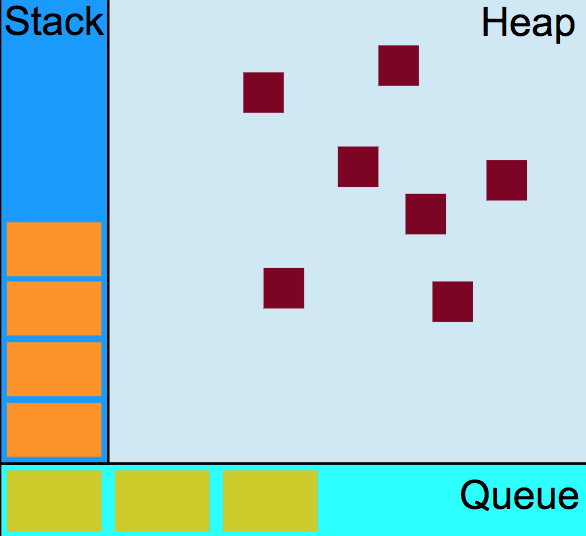
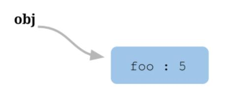
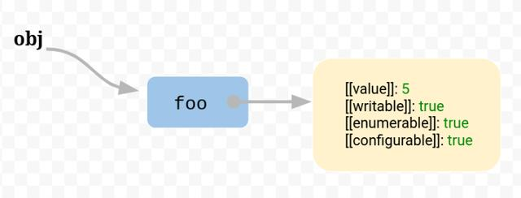
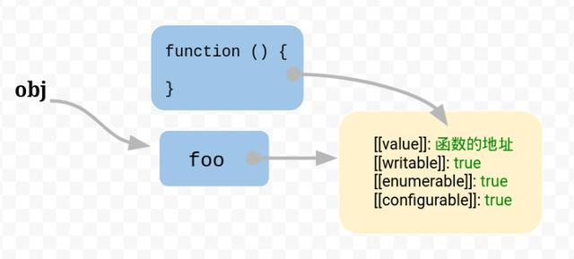
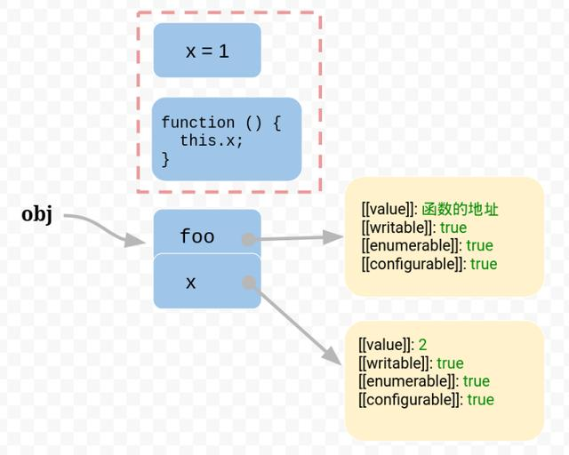
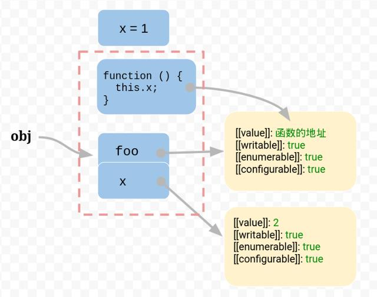

炎黄虞夏商，周到战国亡，秦朝并六国，赢政称始皇。楚汉鸿沟界，最后属刘邦，西汉孕新莽，东汉迁洛阳。末年黄巾出，三国各称王，西晋变东晋，迁都到建康，拓跋入中原，国分南北方，北朝十六国，南朝宋齐梁，南陈被隋灭，杨广输李唐，大唐曾改周，武后则天皇，残皇有五代，伶官舞后庄，华歆分十国，北宋火南唐，金国俘二帝，南宋到苏杭，蒙主称大汗，最后被明亡，明到崇帧帝，大顺立闯王，金田太平国，时适清道光，九传至光绪，维新有康梁，换位至宣统，民国废末皇，五四风雨骤，建国存新纲，抗日反内战，五星红旗扬。
JS基础
JavaScript是一种多范式的动态语言，它包含类型、运算符、标准内置(built-in)对象和方法。
函数防抖和节流
一、引言
在前端开发的过程中，我们经常会需要绑定一些持续触发的事件，如 resize、scroll、mousemove 等等，但有些时候我们并不希望在事件持续触发的过程中那么频繁地去执行函数。通常通过防抖和节流来解决这种情况。
二、防抖 debounce
定义
所谓防抖，指触发事件后在 n 秒内函数只能执行一次，如果在 n 秒内又触发了事件，则会重新计算函数执行时间。
原理
函数防抖是在函数节流的基础上，每隔固定的时间，不管定时器触发没触发，都会执行一遍自定义函数。
举个栗子：滚动scroll事件，不停滑动滚轮会连续触发多次滚动事件，从而调用绑定的回调函数，我们希望当我们停止滚动的时，才触发一次回调，这时可以使用函数防抖。
三、节流 throttle
定义
所谓节流，就是指连续触发事件但是在 n 秒中只执行一次函数。
原理
对于连续触发的事件，我们通过设置一个定时器，让其在过了特定时间t1后触发，如果在t1时间内再次触发了该事件，则清除上一次计时器，重新计时，等待新计时时间的到来。
在每次出发的时候我们就开一个定时器，将DOM操作延迟，然后在下一次事件触发的时候，我们把这个定时器关掉，我们开关定时器，一直到一定的时机在触发事件。举个栗子：还是以scroll滚动事件来说吧，滚动事件是及其消耗浏览器性能的，不停触发。以我在项目中碰到的问题，移动端通过scroll实现分页，不断滚动，我们不希望不断发送请求，只有当达到某个条件，比如，距离手机窗口底部150px才发送一个请求，接下来就是展示新页面的请求，不停滚动，如此反复；这个时候就得用到函数节流。
事件捕获/冒泡
一、概念
事件冒泡是由IE开发团队提出来的，即事件开始时由最具体的元素（文档中嵌套层次最深的那个节点）接收，然后逐级向上传播。
1 | <!DOCTYPE html> |
当用户点击了 <div> 元素，click 事件将按照<div>—><body>—><html>—>document 的顺序进行传播。若在 <div> 和 <body> 上都定义了 click 事件，点击 <div>，将先弹出 div，再输出 body。IE9，chrome，Firefox，Opera，Safari都支持事件冒泡，并将事件冒泡到 window 对象。
二、事件捕获
事件捕获是由Netscape Communicator团队提出来的，是先由最上一级的节点先接收事件，然后向下传播到具体的节点。
1 | <!DOCTYPE html> |
当用户点击了 <div> 元素，采用事件捕获，则 click 事件将按照 document—><html>—><body>—><div>的顺序进行传播。例：用户点击了 <div> 元素，将先弹出 body，再输出 div。IE9，chrome，Firefox，Opera，Safari都支持事件捕获，但是IE8和IE8以下的版本只支持事件冒泡。尽管DOM2规范要求事件应该从document对象开始传播，但是现在的浏览器实现都是从window对象开始捕获事件。
三、事件流

1 | <!DOCTYPE html> |
点击 <div>，将先弹出“事件捕获”，再弹出“div”，最后弹出“事件冒泡”。
四、综合
1 | <!DOCTYPE html> |
点击 id = “child” 的 div,输出顺序：body:捕获阶段！！！—>parent:捕获阶段！！！—>child:目标阶段—>child:目标阶段捕获->parent:冒泡阶段。。。—>body:冒泡阶段。。。
调换顺序：
1 | child.addEventListener("click", function(event) { |
点击 id = “child” 的 div,输出顺序：body:捕获阶段！！！—>parent:捕获阶段！！！—>child:目标阶段捕获—>child:目标阶段->parent:冒泡阶段。。。—>body:冒泡阶段。。。
五、扩展
Javascript与HTML之间的交互是通过事件实现, 事件是javascript和HTML交互基础, 任何文档或者浏览器窗口发生的交互, 都要通过绑定事件进行交互;事件有DOM0,DOM1,DOM2和DOM3的区分。
- DOM0
JavaScript在早期版本中提供了查询和操作Web文档的内容API（如：图像和表单），在JavaScript中定义了定义了’images’、’forms’等，因此我们可以像下这样访问第一张图片或名为“user”的表单：
1 | document.images[0] |
这实际上是未形成标准的试验性质的初级阶段的DOM，现在习惯上被称为DOM0，即：第0级DOM。由于DOM0在W3C进行标准备化之前出现，还处于未形成标准的初期阶段，这时Netscape和Microsoft各自推出自己的第四代浏览器，自此DOM遍开始出各种问题。
DOM0与DHTML
Netscape Navigator 4和IE4分别发布于1997年的6月和10月，这两种浏览器都大幅扩展了DOM，使JavaScript的功能大大增加，而此时也开始出现一个新名词：DHTML。DHTML是Dynamic HTML（动态HTML）的简称。DHTML并不是一项新技术，而是将HTML、CSS、JavaScript技术组合的一种描述。即：
- 利用HTML把网页标记为各种元素
- 利用CSS设置元素样式及其显示位置
- 利用JavaScript操控页面元素和样式
利用DHTML，看起来可以很容易的控制页面元素，并实现一此原本很复杂的效果（如：通过改变元素位置实现动画）。但事实并非如此，因为没有规范和标准，两种浏览器对相同功能的实现确完全不一样。为了保持程序的兼容性，程序员必须写一些探查代码以检测JavaScript是运行于哪种浏览器之下，并提供与之对应的脚本。JavaScript陷入了前所未有的混乱，DHTML也因此在人们心中留下了很差的印象。
dom0事件的特点：
dom0 事件就是直接通过 onclick 绑定到 html上的事件
清理dom0 事件时，只需给该事件赋值为 null
同一个元素的同一种事件只能绑定一个函数，否则后面的函数会覆盖之前的函数
不存在兼容性问题
每个元素（包括window，document）都有自己的事件处理程序属性，但是必须在DOM节点加载完之后才会有效
使用DOM0级方法指定的事件处理程序被认为是元素的方法，在元素的作用域中运行，this引用当前元素
1
2
3
4
5
6<script type="text/javascript">
var div = document.getElementById("myDiv");
div.onclick = function(event) {
alert(this.id);
};
</script>
- DOM1的出现
在浏览器厂商进行浏览器大站的同时，W3C结合大家的优点推出了一个标准化的DOM，并于1998年10月完成了第一级 DOM，即：DOM1。W3C将DOM定义为一个与平台和编程语言无关的接口，通过这个接口程序和脚本可以动态的访问和修改文档的内容、结构和样式。
DOM1级主要定义了HTML和XML文档的底层结构。在DOM1中，DOM由两个模块组成：DOM Core（DOM核心）和DOM HTML。其中，DOM Core规定了基于XML的文档结构标准，通过这个标准简化了对文档中任意部分的访问和操作。DOM HTML则在DOM核心的基础上加以扩展，添加了针对HTML的对象和方法，如：JavaScript中的Document对象
因为DOM 1一般只有设计规范没有具体实现,所以一般跳过
- DOM2
DOM2级在原来DOM的基础上又扩充了鼠标、用户界面事件、范围、遍历等细分模块，而且通过对象接口增加了对CSS的支持。在DOM2中引入了下列模块，在模块包含了众多新类型和新接口：
- DOM视图（DOM Views）：定义了跟踪不同文档视图的接口
- DOM事件（DOM Events）：定义了事件和事件处理的接口
- DOM样式（DOM Style）：定义了基于CSS为元素应用样式的接口
- DOM遍历和范围（DOM Traversal and Range）：定义了遍历和操作文档树的接口
dom2 事件的特点：
- dom2 事件是通过 addEventListener 绑定的事件
- 同一个元素的同种事件可以绑定多个函数，按照绑定顺序执行
- 清除 dom2 事件时，使用 removeEventListener，传入的参数必须和绑定时传入的参数相同,且不能移除匿名添加的函数
dom2 级绑定事件方法addEventListener()接收三个参数:
- 第一个参数是事件名,如click等
- 第二个参数是事件处理程序函数；
- 第三个参数如果是true则表示在捕获阶段调用，为false表示在冒泡阶段调用。
DOM3
DOM3进一步扩展了DOM，在DOM3中引入了以下模块：- DOM加载和保存模块（DOM Load and Save）：引入了以统一方式加载和保存文档的方法
- DOM验证模块（DOM Validation）：定义了验证文档的方法
- DOM核心的扩展（DOM Style）：支持XML 1.0规范，涉及XML Infoset、XPath和XML Base
DOM3级事件:
DOM3级事件在DOM2级事件的基础上添加了更多的事件类型，全部类型如下：
- UI事件，当用户与页面上的元素交互时触发，如：load、scroll
- 焦点事件，当元素获得或失去焦点时触发，如：blur、focus
- 鼠标事件，当用户通过鼠标在页面执行操作时触发如：dbclick、mouseup
- 滚轮事件，当使用鼠标滚轮或类似设备时触发，如：mousewheel
- 文本事件，当在文档中输入文本时触发，如：textInput
- 键盘事件，当用户通过键盘在页面上执行操作时触发，如：keydown、keypress
- 合成事件，当为IME（输入法编辑器）输入字符时触发，如：compositionstart
- 变动事件，当底层DOM结构发生变化时触发，如：DOMsubtreeModified
- 同时DOM3级事件也允许使用者自定义一些事件。
事件循环机制
一、JavaScript 是单线程单并发语言
什么是单线程
主程序只有一个线程，即同一时间片断内其只能执行单个任务。
为什么选择单线程？
JavaScript的主要用途是与用户互动，以及操作DOM，这决定了它只能是单线程，否则会带来很复杂的同步问题。
单线程意味着什么？
单线程就意味着，所有任务都需要排队，前一个任务结束，才会执行后一个任务。如果前一个任务耗时很长，后一个任务就需要一直等着，这就会导致IO操作（耗时但cpu闲置）时造成性能浪费的问题。
如何解决单线程带来的性能问题？
答案是异步！主线程完全可以不管IO操作，暂时挂起处于等待中的任务，先运行排在后面的任务。等到IO操作返回了结果，再回过头，把挂起的任务继续执行下去。于是，所有任务可以分成两种，一种是同步任务（synchronous），另一种是异步任务（asynchronous）
二、事件循环（Event Loop）
JavaScript 内存模型

1
2
3* 执行栈(execution context stack)：用于主线程任务的执行
* 堆(Heap)：用于存放非结构化数据，譬如程序分配的变量与对象
* 任务队列(task queue)：用于存放异步任务与定时任务。JavaScript 代码执行机制
- 步骤1：所有同步任务都在主线程上执行，形成一个执行栈（execution context stack）。
- 步骤2：主线程之外，还存在一个”任务队列”（task queue）。只要异步任务有了运行结果，就在”任务队列”之中放置一个事件。
- 步骤3：一旦”执行栈”中的所有同步任务执行完毕，系统就会读取”任务队列”，选择出需要首先执行的任务（由浏览器决定，并不按序）。
- 主线程不断重复上面的步骤3。

主线程运行的时候，产生堆（heap）和栈（stack），栈中的代码调用各种外部API，它们在”任务队列”中加入各种事件（click，load，done）。只要栈中的代码执行完毕，主线程就会去读取”任务队列”，依次执行那些事件所对应的回调函数。
- 事件循环
主线程从”任务队列”中读取事件，这个过程是循环不断的，所以整个的这种运行机制又称为Event Loop（事件循环）。
宏任务MacroTask、微任务MicroTask
在 JavaScript 事件循环机制中，任务队列分为宏任务（macro-task）和微任务（micor-task）两种，分别如下：
- 宏任务包括：setTimeout > setInterval > setImmediate > I/O
- 微任务包括：process.nextTick > Promise > Object.observe > MutationObserver
例子
1
2
3
4
5
6
7
8
9
10
11
12
13
14
15
16
17
18
19
20
21
22
23
24
25
26
27
28
29
30
31
32
33
34function ELoop() {
// 当前任务
let p = new Promise((resolve, reject)=>{
console.log("current Task")
resolve();
});
let nextP;
setTimeout(()=>{
console.log("MacroTask_1");
nextP.then(()=>{
// 第一次执行时，这段代码并没有执行到。
console.log("MicroTask_promise_1"); //第一个MicroTask
})
console.log("MacroTask_1 end")
}, 0) // 第一个 MacroTask
setTimeout(()=>{
console.log("MacroTask_2");
console.log("MacroTask_2 end")
}, 0)// 第二个MacroTask
nextP = p.then(()=>{
console.log("MicroTask_promise_2"); //第一个MicroTask
console.log(111)
}).then(()=>{
console.log("MicroTask_promise_3"); // 第二个MicroTask
console.log(222)
})
console.log("current Task end")
}
ELoop();1
2
3
4
5
6
7
8
9
10current Task
current Task end
MicroTask_promise_2
1111
MicroTask_promise_3
MacroTask_1
MacroTask_1 end
MicroTask_promise_1
MacroTask_2
MacroTask_2 end
三、参考
let和var
ES6新增了let命令，用来声明变量。它的用法类似于var，但是所声明的变量，只在let命令所在的代码块内有效。
1
2
3
4
5
6
7{
let a = 10;
var b = 1;
}
a // ReferenceError: a is not defined.
b // 1- for循环用var声明变量
1
2
3
4
5
6
7var a = [];
for (var i = 0; i < 10; i++) {
a[i] = function () {
console.log(i);
};
}
a[6](); // 10
上面代码中，变量i是var命令声明的，在全局范围内都有效，所以全局只有一个变量i。每一次循环，变量i的值都会发生改变，而循环内被赋给数组a的函数内部的console.log(i)，里面的i指向的就是全局的i。也就是说，所有数组a的成员里面的i，指向的都是同一个i，导致运行时输出的是最后一轮的i的值，也就是 10。
for循环用let声明变量
1
2
3
4
5
6
7var a = [];
for (let i = 0; i < 10; i++) {
a[i] = function () {
console.log(i);
};
}
a[6](); // 6
上面代码中，变量i是let声明的，当前的i只在本轮循环有效，所以每一次循环的i其实都是一个新的变量，js引擎内部会记住上一轮循环的值，初始化本轮的变量i时，就在上一轮循环的基础上进行计算,所以最后输出的是6。
for循环还有一个特别之处，就是设置循环变量的那部分是一个父作用域，而循环体内部是一个单独的子作用域。
1
2
3
4
5
6
7for (let i = 0; i < 3; i++) {
let i = 'abc';
console.log(i);
}
// abc
// abc
// abc
上面代码正确运行，输出了 3 次abc。这表明函数内部的变量i与循环变量i不在同一个作用域，有各自单独的作用域。
var命令会发生“变量提升”现象，即变量可以在声明之前使用，值为undefined；let所声明的变量一定要在声明后使用，否则报错。
1
2
3
4
5
6
7// var 的情况
console.log(foo); // 输出undefined
var foo = 2;
// let 的情况
console.log(bar); // Uncaught ReferenceError: bar is not defined
let bar = 2;暂时性死区
1
2
3
4
5
6
7var tmp = 123; // 全局变量tmp
if (true) {
tmp = 'abc'; // 重新赋值全局变量tmp
let tmp; // 声明局部变量tmp
}
// Uncaught ReferenceError: tmp is not defined
上面代码中存在全局变量tmp，但是块级作用域内let又声明了一个局部变量tmp，导致后者绑定这个块级作用域，所以在let声明变量前，对tmp赋值会报错。
ES6 明确规定，如果区块中存在let和const命令，这个区块对这些命令声明的变量，从一开始就形成了封闭作用域。凡是在声明之前就使用这些变量，就会报错。
总之，在代码块内，使用let命令声明变量之前，该变量都是不可用的。这在语法上，称为“暂时性死区”（temporal dead zone，简称 TDZ）。
1 | if (true) { |
上面代码中，在let命令声明变量tmp之前，都属于变量tmp的“死区”。
“暂时性死区”也意味着typeof不再是一个百分之百安全的操作。
1
2typeof x; // ReferenceError
let x;// Uncaught ReferenceError: x is not defined隐藏的”暂时性死区”：
1
2
3
4
5
6
7
8
9
10function bar(x = y, y = 2) {
return [x, y];
}
bar(); // 报错
// 不报错
var x = x;
// 报错 ReferenceError: x is not defined
let x = x;暂时性死区的本质就是，只要一进入当前作用域，所要使用的变量就已经存在了，但是不可获取，只有等到声明变量的那一行代码出现，才可以获取和使用该变量。
let不允许在相同作用域内，重复声明同一个变量。
1
2
3
4
5
6
7
8
9
10
11
12
13//报错 Uncaught SyntaxError: Identifier 'a' has already been declared
function func() {
let a = 10;
var a = 1;
}
func()
//报错 Uncaught SyntaxError: Identifier 'a' has already been declared
function func() {
let a = 10;
let a = 1;
}
func()
1 | function func(arg) { |
let实际上为js新增了块级作用域
1
2
3
4
5
6
7function f1() {
let n = 5;
if (true) {
let n = 10;
}
console.log(n); // 5
}
上面的函数有两个代码块，都声明了变量n，运行后输出 5。这表示外层代码块不受内层代码块的影响。如果两次都使用var定义变量n，最后输出的值才是 10。
ES6新增了块级作用域
ES6允许块级作用域的任意嵌套
外层作用域无法读取内层作用域的变量
内层作用域可以定义外层作用域的同名变量
疑惑：*
1
2
3
4
5
6
7
8
9
10
11
12
13
14
15
16
17
18
19
20
21
22
23
24
25var tmp = new Date();
function f() {
console.log(tmp);
if (true) {
var tmp = 'hello world';
}
}
f(); // undefined
var tmp = new Date();
function f() {
console.log(tmp);
if (false) {
var tmp = 'hello world';
}
}
f(); // undefined
var tmp = new Date();
function f() {
console.log(tmp);
}
f(); // Wed Mar 20 2019 01:37:56 GMT+0800 (中国标准时间)
this
一、引入
1 | var obj = { |
一般解释：this指的是函数运行时所在的环境，对于obj.foo()来说，foo运行在obj环境，所以this指向obj；对于foo()来说，foo运行在全局环境，所以this指向全局环境。
二、剖析
如果对象的属性是一个值，如下：
1 | var obj = { foo: 5 }; |
将一个对象赋值给变量obj，js引擎会先在内存里面生成一个对象{ foo: 5 }，然后把这个对象的内存地址赋值给变量obj，也就是说变量obj是一个地址（reference）。

后面如果要读取obj.foo，js引擎会先从obj拿到内存地址，然后再从该地址读出原始的对象，返回它的foo属性。
原始的对象以字典结构保存，每一个属性名都对应一个属性描述对象。对于上面例子的foo属性实际上是以下面的形式保存的：

注意，foo属性的值保存在属性描述对象的value属性里面
如果对象的属性是一个函数，如下：
1 | var obj = { foo: function () {} }; |
这时js引擎会将函数单独保存在内存中，然后再将函数的地址赋值给foo属性的value属性。

由于函数是一个单独的值，所以它可以在不同的环境（上下文）执行。
1 | var f = function () {}; |
JavaScript允许在函数体内部，引用当前环境的其他变量。
1 | var f = function () { |
上面代码中，函数体里面使用了变量x,该变量由运行环境提供。现在问题就来了，由于函数可以在不同的运行环境执行，所以需要有一种机制，能够在函数体内部获得当前的运行环境（context）。所以this就出现了，它的设计目的就是在函数体内部，指代函数当前的运行环境。
1 | var f = function () { |
上面代码中，函数体里面的this.x就是指当前运行环境的x。
1 | var f = function () { |
上面代码中，函数f在全局环境执行，this.x指向全局环境的x。

obj环境执行，this.x指向obj.x。

回到本文开头提出的问题，obj.foo()是通过obj找到foo，所以就是在obj环境执行。一旦var foo = obj.foo，变量foo就直接指向函数本身，所以foo()就变成在全局环境执行。